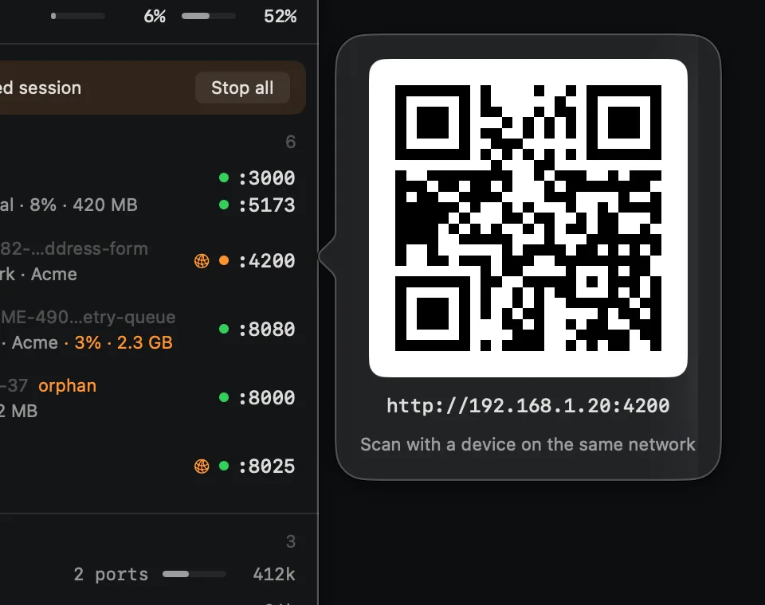
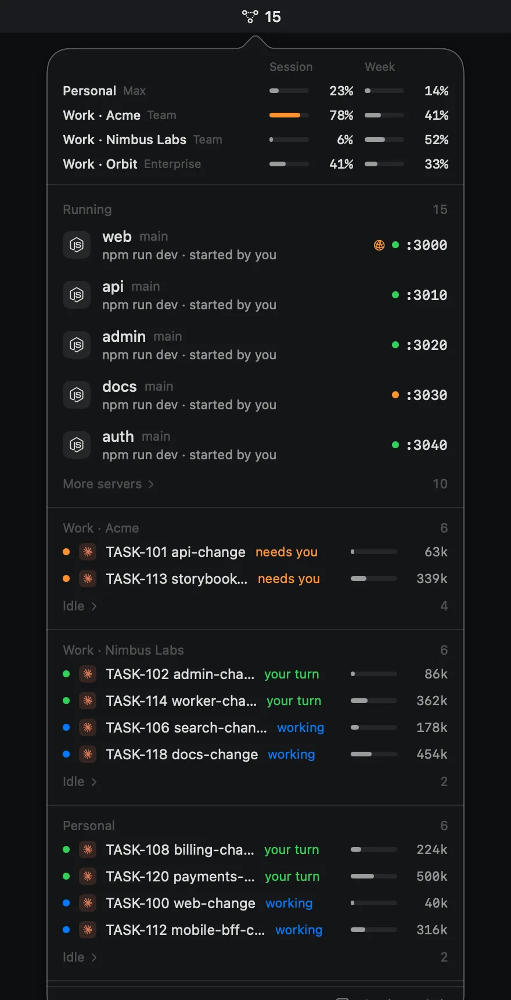

Floating window
Detach the panel into a translucent window on any display, as tall as you like, above other windows. Close it and portent goes back to the menu bar.
portent lives in the macOS menu bar: Claude plan usage per account, every dev server with who started it, and every live agent session, a click away.
curl -fsSL https://adrianfernandezalv.github.io/portent-releases/install.sh | bash
brew install adrianfernandezalv/tap/portent
No analytics, no account. portent only talks to Claude and this site.
Plan usage
Session and weekly limits for each account and organization you use, side by side. portent tells you at 75% and 90%, and again when a heavily used window resets, so you can switch accounts before you hit the wall.
Dev servers
Each port gets a health dot, its branch and its origin: a Claude Code or Claude Desktop session, Docker, or started by you.
Agent sessions
Live Claude Code and Claude Desktop sessions, grouped by account: working, needs you, or your turn. A bar shows how full each context window is, next to the servers that session started.
Notifications
A notification when a session is waiting for a permission or an answer, or finishes a long turn. Click it and that exact session opens in Claude Desktop.
And more
Detach the panel into a translucent window on any display, as tall as you like, above other windows. Close it and portent goes back to the menu bar.
Ports open to the network get an orange globe. Click it for a QR code, or right-click for the network URL.

Fifteen servers, two dozen sessions: extras and idle sessions fold away when the panel is full.

Follows your system appearance, or pick one in Settings.
A plain connection check every few seconds. HTTP requests only while the panel is open, so your server logs stay clean.
● :3000 connect · no request logged
Open the panel from anywhere with a shortcut you pick in Settings.
For example Option Command P⌥⌘P
Signed in-app updates with Sparkle. Install them automatically or when you choose.
v0.2.1 · release notes
Everything it shows comes from your Mac. No analytics, no portent account.
One line in the terminal, Homebrew, or a disk image. Every way gets the same signed app, and it updates itself from then on.
curl -fsSL https://adrianfernandezalv.github.io/portent-releases/install.sh | bash
Downloads the latest release into Applications, clears the quarantine flag and opens it. Read the script first.
brew install adrianfernandezalv/tap/portent
Installs the cask from the portent tap. Remove it with brew uninstall portent.
Open it and drag portent to Applications.
portent is signed with its own certificate and isn't notarized by Apple. The install script and the Homebrew cask clear the quarantine flag, so it opens normally. If you used the disk image and macOS says it can't verify the developer, open System Settings › Privacy & Security and click Open Anyway once.
A Mac on macOS 14 Sonoma or later, Apple silicon or Intel. Plan usage works with the account Claude Code is signed into, and with any claude.ai accounts you sign in to inside portent.
Sessions from Claude Code and Claude Desktop. Dev servers show whether a Claude session, Docker or you started them.
No. portent reads ports, processes and session files on your Mac. It only goes online to read your plan usage from Claude, and to fetch updates and a small table of model context sizes from this site. There's no analytics and no portent account.
No. portent stops a server only when you click Stop, and never stops projects you protect. When ports share a process, it tells you which ones stop together.
portent is self-signed, not notarized. The install script and Homebrew clear the warning for you; from the disk image, use Open Anyway in Privacy & Security once.
Quit portent from the panel and move it to the Trash, or run brew uninstall portent if you installed it with Homebrew.